Optical Coating Examples
Textbook-style coating designs created as illustrations across visible, NIR, and IR bands.
- Design tools: FilmStar, OpenFilters, TFCalc, Essential Macleod
- Methods: QWOT stacks and target-based optimization
- Purpose: illustrate common optical coating architectures
V Coat (2-layer)
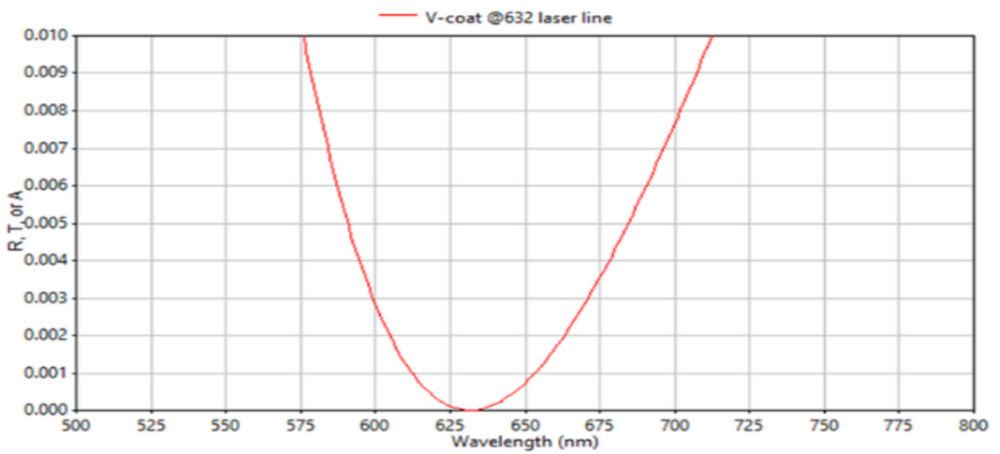
- 2-layer V-coat centered at a selectable wavelength.
- Used for narrowband applications (typically < ~40nm).
Visible AR Coating (4-layer)
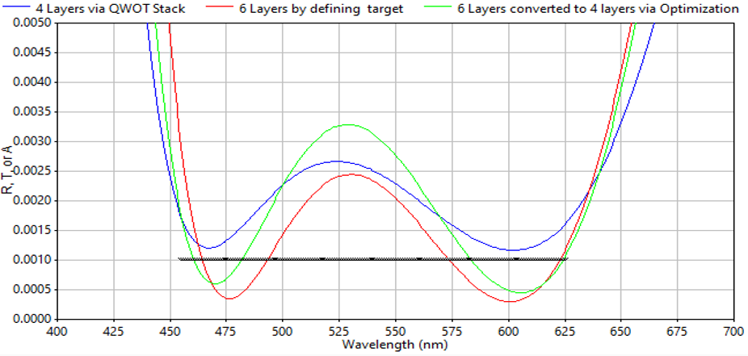
- 4-layer W-shaped oxide design.
Wide Bandpass: Visible → Near IR (12-layer)
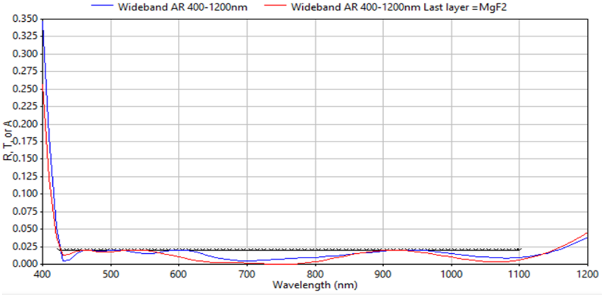
- 12-layer oxide design.
- Reflection < 2% across the band.
Wide Bandpass: IR ~3–5µm (47-layer)
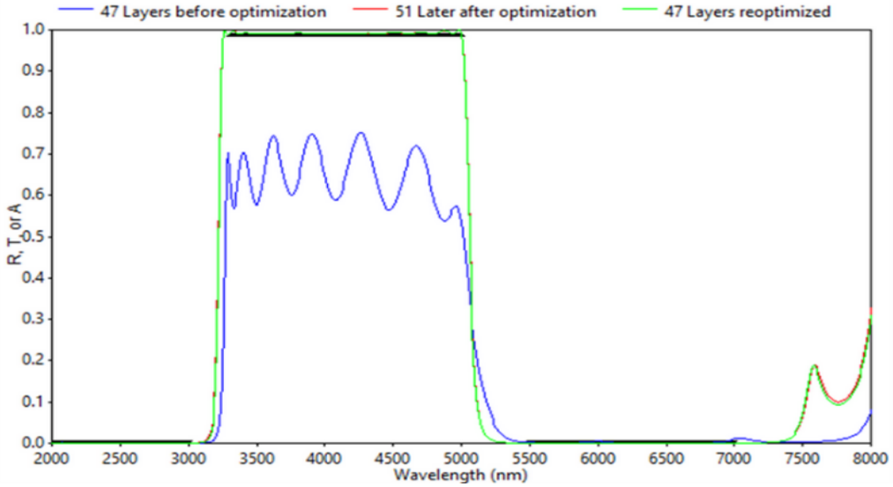
- 47-layer non-oxide design.
- Built by combining short- and long-wavelength bandpass designs, then re-optimized.
4-Wavelength Bandpass Filter (21-layer)
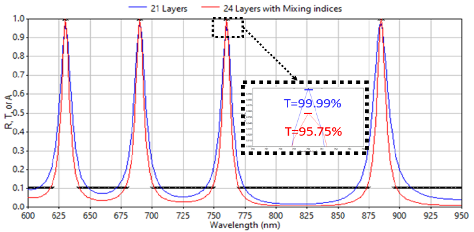
- 21-layer oxide design with 9 transmission targets.
- Blocked regions < 10%, pass regions > 95%.
- Mixed-index variants improve passband performance.
Dielectric High Reflector (Ripple Reduction)
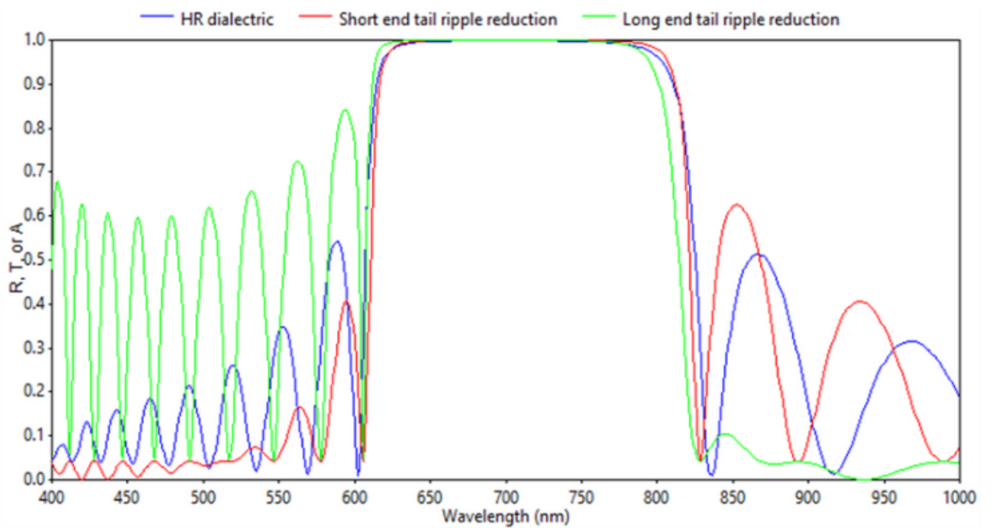
- 20-layer oxide design.
- Reflection > 99.9%.
- Ripple reduction applied to tail regions.
Dielectric High Reflector — Widened
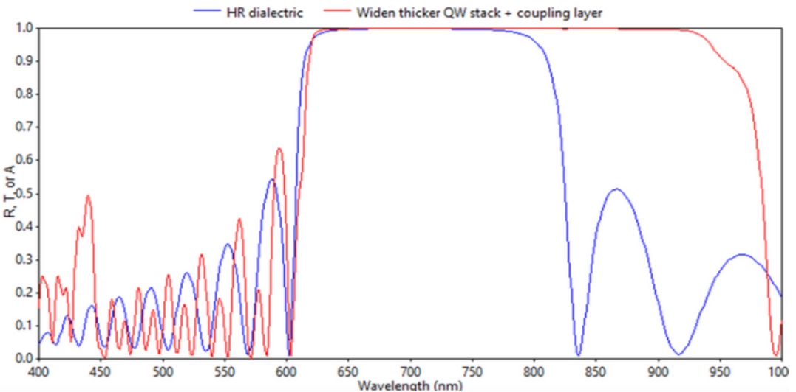
- Widened by adding a thicker stack and coupling layer.
- Reflection > 99.9%.
Polarizing Beamsplitter
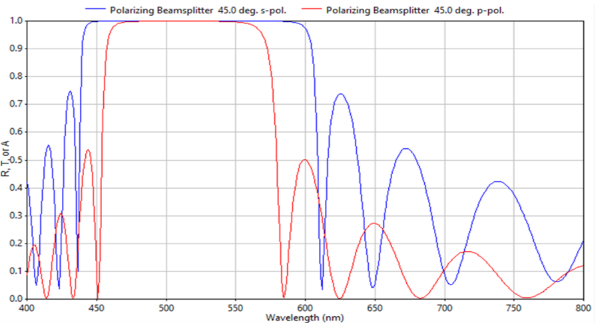
- 24-layer design.
- Reflects s-polarized light and transmits p-polarized light.
Non-Polarizing Beamsplitter
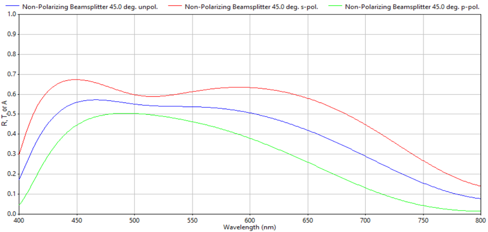
- Splits incident light into defined reflected/transmitted ratios.
Partial Reflector
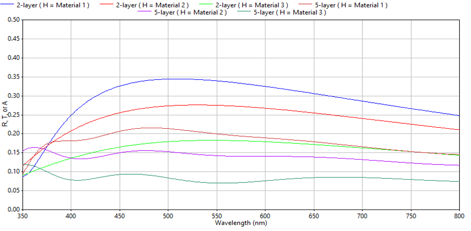
- 2-layer and 5-layer designs.
- Reflection tunable by material choice and stack thickness.
Laser / Narrowband Partial Reflector
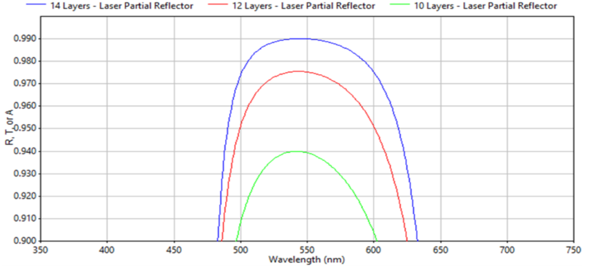
- Reflection tunability via number of layers.
- R(14 layers) > R(12) > R(10).